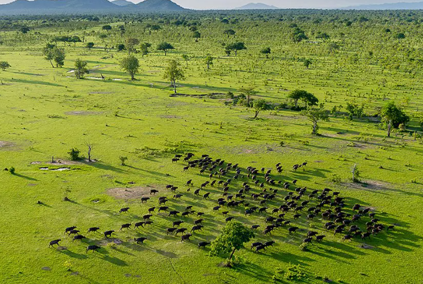
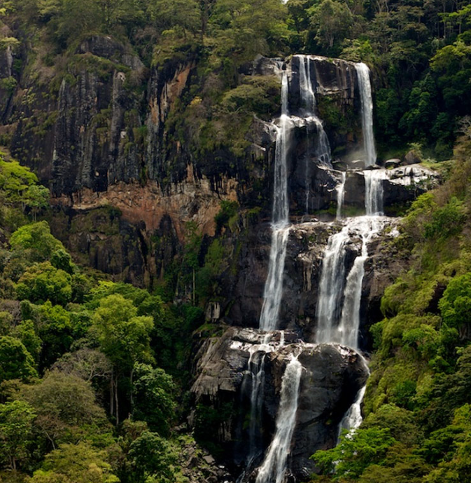
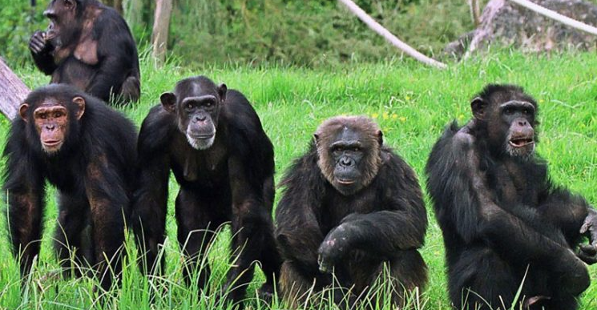
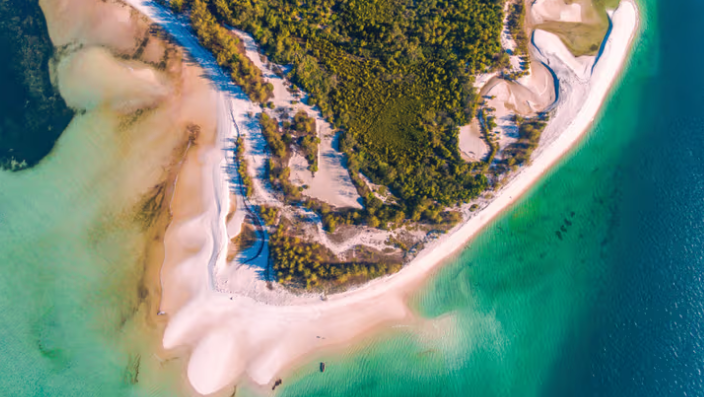
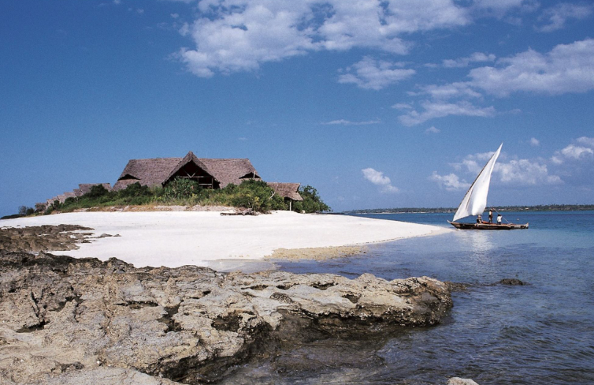
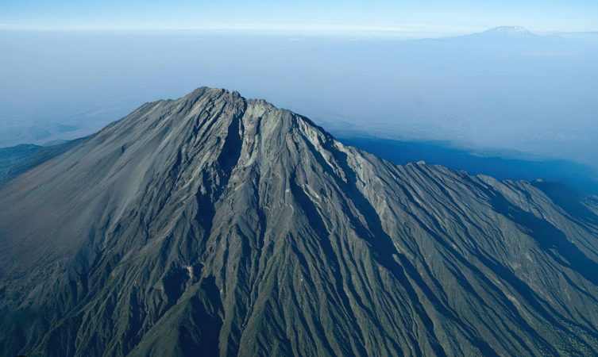

Flip through Tanzania's regions like tuning a field radio — each stop updates the live map beside it.
A stylized overview, not a survey map — tap a pin to jump straight to that destination below.
Illustrative map, not to survey scale — use the live Explorer Console above for real GPS coordinates.
Northern Circuit for classic game viewing, Southern Circuit for solitude, the coast for recovery. Filter by what you're after.
 Northern Circuit
Northern CircuitEndless plains, the Great Migration, and some of the highest predator density in Africa.
 Northern Circuit
Northern CircuitA UNESCO World Heritage caldera home to roughly 25,000 large mammals year-round.
 Northern Circuit
Northern CircuitTanzania's elephant capital, dotted with centuries-old baobab trees along the Tarangire River.
 Northern Circuit
Northern CircuitGroundwater forest, tree-climbing lions, and soda-lake flamingo flocks in one compact park.
 Northern Circuit
Northern CircuitAn easy day trip from town — Mount Meru, the Momella Lakes, and black-and-white colobus monkeys.
 Mountains
MountainsThe Roof of Africa: 5,895m, seven routes, five climate zones in a single ascent.
 Southern Circuit
Southern CircuitTanzania's largest national park, where the Great Ruaha River anchors dense dry-season game viewing.

Southern CircuitAfrica's largest protected wilderness — the former Selous, best explored by boat on the Rufiji River.
 Southern Circuit
Southern CircuitThe most accessible southern park — a 4–5 hour drive from Dar es Salaam.

Southern CircuitRainforest hiking to the Sanje Waterfalls, with endemic primates found nowhere else on Earth.
 Western Tanzania
Western TanzaniaBoat-access only, on the shore of Lake Tanganyika, with habituated wild chimpanzee communities.

Western TanzaniaWhere Jane Goodall began her chimpanzee research in 1960 — Tanzania's smallest national park.
 Western Tanzania
Western TanzaniaRemote and rarely visited — dry-season hippo pools packed shoulder to shoulder.
 Coast & Islands
Coast & IslandsSpice farms, coral reefs, sandbanks, and Swahili-Arab-Indian architecture in the historic quarter.

Coast & IslandsWhale shark season and undisturbed coral gardens, quieter than Zanzibar year-round.

Coast & IslandsSlower, historic mainland beach towns with 19th-century caravan-route architecture.

MountainsA 4-day acclimatization climb inside Arusha National Park, and Kilimanjaro's best warm-up.
 Lakes
LakesAfrica's largest lake by area, with Rubondo Island's forest-and-shore chimpanzee sanctuary.
A caustic, blood-red soda lake beneath Tanzania's only active volcano — flamingo breeding ground.
Roughly 1.5 million wildebeest and 250,000 zebra circle the Serengeti-Mara ecosystem year-round chasing rainfall — there is no single "migration season," only a rough calendar of where the herds tend to be.
Around 8,000 calves born daily at the peak — and the predator action that follows them.
Herds move through the central and western Serengeti corridors.
The dramatic crocodile-infested crossings into the Maasai Mara, weather permitting.
Short rains pull the herds back down through the eastern Serengeti.